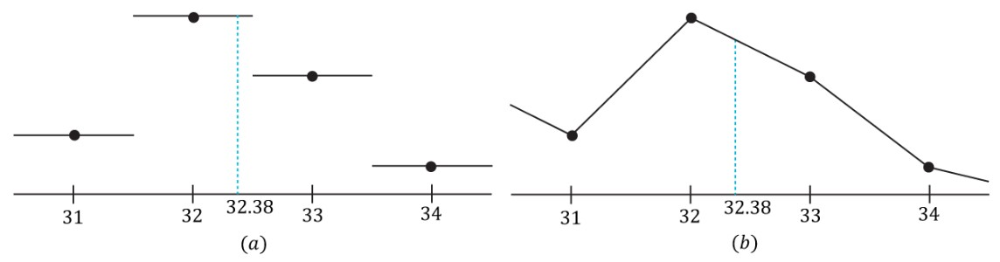

上一节中实现了摄像机与游戏类，但现在游戏中的物体还没有贴图材质。纹理贴图就是这样一种将图像数据映射到网格三角形上的技术，可以使我们为场景增添更多细节，令它更具真实感。一个纹理可以当作渲染目标（即Direct3D中的渲染到纹理技术），又能把它作为着色器资源（即在着色器中对该纹理进行采样），但是不能同时“身兼数职”。
为场景中的物体添加贴图，我们需要引入DDSTextureLoader与WICTextureLoader这两个库，前者用来加载.dds格式的贴图，后者则为通用贴图加载。
1. 纹理坐标
Direct3D所采用的纹理坐标系与屏幕或图片的坐标系类似，是由指向图像水平正方向的u轴与指向图像垂直正方向的v轴所组成的。取值范围为0≤u，v≤1的坐标(u,v)标定的是一种称为纹素（texel）的纹理元素。分别映射到[0, Width]和[0, Height]。
对于每个3D三角形来说，我们希望在将要映射与其上的纹理中定义出与之对应的三角形。设p0、p1以及p2为3D三角形的3个顶点，它们分别对应于纹理坐标q0、q1与q2。则针对3D三角形上的任意一点(x,y,z)处的纹理坐标(u,v)都可以通过与之插值所用的相同参数s、t来对纹理纹理坐标进行线性插值求得。
这就是说，如果：
$$
(x, y, z) = \mathbf{p_0} + s(\mathbf{p_1} - \mathbf{p_0}) + t(\mathbf{p_2} - \mathbf{p_0})
$$
当s≥0，t≥0，s+t≤1时，那么：
$$
(u, v) = \mathbf{q_0} + s(\mathbf{q_1} - \mathbf{q_0}) + t(\mathbf{q_2} - \mathbf{q_0})
$$
依次方法便可求出三角形上每个点处对应的纹理坐标。
为了实现此计算需要对顶点结构体进行修改：
将HLSL头文件的结构体中的Color改为Tex
顶点着色器中同理，将Color改为Tex
将pIn.Color.a改为texColor.a
在GameApp的游戏对象类中添加纹理设置函数
1 | void SetTexture(ID3D11ShaderResourceView* texture); |
2. 纹理数据源
对于实时图形应用程序来说，DDS图像文件格式是一种尚佳的选择。
为了缓解场景中纹理数量增加带来内存需求压力，Direct3D支持下列几种压缩格式（也称为块压缩）：
- BC1(DXGI_FORMAT_BC1_UNORM)：如果我们需要将图片压缩为支持3个颜色通道和仅有1位（开/关）alpha分量的格式，则使用此格式。
- BC2(DXGI_FORMAT_BC2_UNORM)：如果我们需要将图片压缩为支持3个颜色通道和仅有4位alpha分量的格式，则应用此格式。
- BC3(DXGI_FORMAT_BC3_UNORM)：如果我们需要将图片压缩为支持3个颜色通道和仅有8位alpha分量的格式，则应用此格式。
- BC4(DXGI_FORMAT_BC4_UNORM)：如果我们需要将图片压缩为仅含有1个颜色通道的格式（如灰度图像），则应用此格式。
- BC5(DXGI_FORMAT_BC5_UNORM)：如果我们需要将图片压缩为只支持2个颜色通道的格式，则应用此格式。
- BC6(DXGI_FORMAT_BC6_UF16)：如果我们需要将图片压缩为HDR图像数据，则应用此格式。
- BC7(DXGI_FORMAT_BC7_UNORM)：此格式用于对RGBA数据进行高质量的压缩。特别是，此格式可极大地减少因压缩法线图而造成的误差。
这些格式的优点是可以使图像以压缩的形式存于显存之中，而在需要时，GPU便能动态地对它们进行解压。
3. 采样器
在运用纹理的过程中，除了纹理数据本身以外，还有另外两个相关的重要概念，即纹理过滤以及寻址模式。采集纹理资源时所用的过滤器和寻址模式都是通过采样器对象来定义的。
添加采样器
1 | float4 texColor = g_Tex.Sample(g_SamLinear, pIn.Tex); |
3.1 过滤器
当触发纹理放大操作时，我们便需要对纹素之间的颜色数据进行插值估算，从而获得指定纹素处的颜色信息。图形硬件往往会支持常量插值与线性插值两种插值方法。在实践中，线性插值的使用更为普遍。

图a中，若给出了纹素点，我们便可以通过构建分段常量函数来求出纹素点之间某处的近似值。由于得到的近似值为最近纹素点的取值，所以这种方法有时被称为最近邻点采样。图b中，若给出了纹素点，我们便可以通过构建分段线性函数来求出纹素点之间某处的近似值。
此外还有双线性插值，其处理流程如上图所示：给出四个纹素之间的一个纹理坐标，先在水平方向u上进行两次1D线性插值（求出cT与cB），然后在垂直方向v上在进行一次1D内插（求出c）。
通过常量插值来求得纹素之间纹理坐标处的纹理数据也称为点过滤，对应的通过线性插值的方法称为线性过滤。
3.2 寻址模式
Direct3D允许我们采用下列4中不同的寻址模式（Address Mode）来扩充此函数的定义域。分别是重复寻址模式（wrap）、边框颜色寻址模式（border color）、钳位寻址模式（clamp）与镜像寻址模式（mirror）。
3.2.1 重复寻址模式
重复寻址模式通过在坐标的每个整数点处重复绘制图像来扩充纹理函数。
3.2.2 边框颜色寻址模式
边框颜色寻址模式通过将每个不在范围[0,1]^2内的坐标(u,v)都映射为指定的颜色而扩充纹理函数。
3.2.3 钳位寻址模式
钳位寻址模式通过将范围[0,1]^2外的每个坐标(u,v)都映射为颜色T(u0,v0)来扩充纹理函数。其中(u0,v0)为范围[0,1]^2内距离(u,v)最近的点。
3.2.4 镜像寻址模式
镜像寻址模式通过在坐标的每个整数点处绘制图像的镜像来扩充纹理函数。
3.3 采样器对象
采样器会被着色器使用，为了将采样器绑定到着色器上供其使用，我们就需要为采样器对象绑定描述符。更改顶点布局类型为VertexPosNormalTex。
1 | //初始化游戏对象 |
绑定缓冲区
1 | m_pContext->PSSetSamplers(0, 1, m_pSampler.GetAddressOf()); |
在Draw函数中设置纹理
1 | //设置纹理 |
参考：
1.《DirectX 12 3D游戏开发实战 第7章》